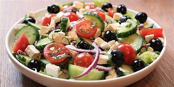

Salada Grega
Ingredientes
- 1 pepino
- 3 tomates maduros
- 1 cebola roxa
- 200g de queijo feta
- 100g de azeitonas pretas
- Orégano fresco
- Azeite de oliva extravirgem
- Sal a gosto
- Pimenta do reino a gosto
Modo de Preparo
- Lave e corte o pepino, os tomates e a cebola em rodelas finas.
- Corte o queijo feta em cubos.
- Disponha o pepino, os tomates, a cebola, o queijo feta e as azeitonas em uma saladeira.
- Tempere com orégano fresco, azeite de oliva, sal e pimenta do reino a gosto.
- Misture delicadamente todos os ingredientes.
- Sirva a Salada Grega imediatamente.